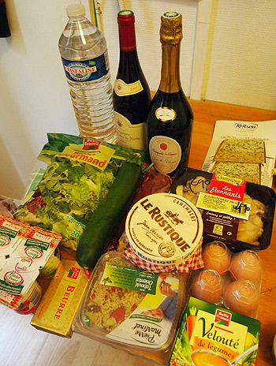
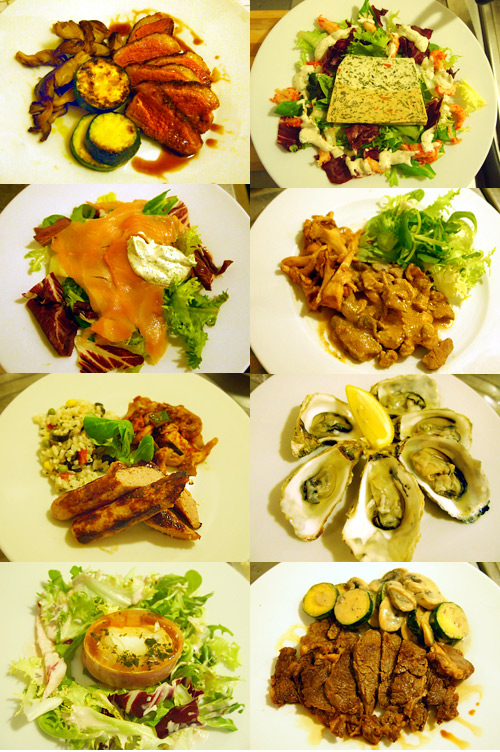
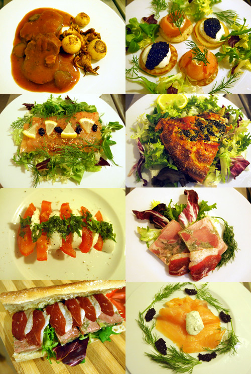
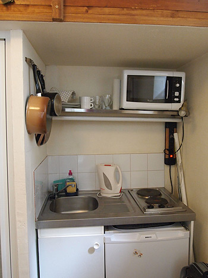

{kind=link}

とにもかくにもフランスのスーパーはわくわくする！ 大きくてぴかぴかの野菜！見たこと無いきのこ！量り売り！ 果てしない陳列のチーズ、バター売り場。種類の豊富さにめまいを起こしそうな加工肉コーナー。 日本国内にいてもスーパーが大好きなのに、この楽しさはもう抑えきれない。 もう顔がほころぶってどころじゃない、不審者扱いでマークされてもおかしくないぐらい あっちの棚、こっちの棚にエヘエヘと笑いながら移動する。 缶詰なんかもう何が入っているのかさっぱりわかんなくて、でもなんか欲しくなるのが たくさんあるの！ ----------------------------------------------------------- 第一天 我去了超級市場。 法國的超級市場有很多令人興奮的東西！ 蔬菜又新鮮又超大！你看！你看！這家超級市場有我沒見過的蘑！ 你看！你看！很大的乳酪和奶油冰箱！香腸跟火腿也很多！ 在日本我也喜歡逛超級市場，可是我更喜歡法國的！ 我非常興奮！ 我從這個食品櫃到那個食品櫃一邊笑一邊逛。 你看！這個罐頭裏面有什麽？不過！我想要買這個謎的罐頭！ ------------------------------------------------------------{kind=link}

ステーキを焼いてみたり、鴨を焼いたりとかしたけど、やっぱりブッフブルギニョンとか、クリームでこってり煮込んだお肉が食べたいなぁ…ということで、ピラミッド近くのモノプリ地下とかラファイエットの地下で惣菜を買ってみたりとかも。 美味しいわー美味しいわー…と美味しいことが罪なように言いながら、毎日ワインと楽しんでました。 バターがうまい！チーズがうまい！ 塩がうまい！ もうこのまま血圧下がんなくてもいいわーってゆーぐらい、こってりのしおしお。 ゲランドとカマルグだとやっぱりカマルグ派。 そんでもってこの塩が、野菜の甘みに合うこと！フランスの野菜は肉に負けないようしっかり主張している味がする。きのこも盛りでセップとジロールがバター炒めで最高。 牡蠣もこれからシーズン！ずらりと店先にならんだ色んな種類の牡蠣にどうしても衝動を抑えられずに購入。（旅先であたると大変なので避けてた）ナイフで殻剥き。 ------------------------------------------------------------ 我做了牛排，烤鴨。但是我想吃有名的法國菜。 例如。。。Boeuf Bourguignon是布根地的傳統菜。。。我想吃。。。 既然如此，我就去了超級市場買菜。 好吃---！好吃-----!`非常好吃---！我每天一邊說[好吃]一邊喝葡萄酒。 乳酪好吃！奶油很好吃！ 還有鹽好吃！ 血壓可以一直高！油膩鹽鹽！！ 法國有有名的兩种鹽，是[Camargue][Guérande]。 我喜歡[Camargue]。 這種鹽適合跟甜甜的蔬菜！很棒！我覺得法國的蔬菜有濃味道。 這個的時候蘑也很棒！法國的有名蘑是[cepes][girolle]。兩种蘑和奶油一塊炒很好！ 這個季節的牡蠣也是最好的。這傢店前面有很多种牡蠣！ 我不敢忍耐。。。我買了一些牡蠣就吃。 ------------------------------------------------------------{kind=link}

それにしても、こうして一覧にすると面白いな。 あれを乗っけて、これを敷いて、並べて…オトナ女子の積み木あそび。 パリのアパルトマン。キッチンのある旅。おすすめです。 …おまけ。 これがキッチン。電磁調理器だけど意外と火力（？）があった。 -------------------------------------------------------------------- 這張照片是我做的菜。。。有意思。 這個東西放在那個東西上面，那個東西放在這個東西下面。。。大人的積木。 巴黎的公寓和有廚房的旅遊很好！ --------------------------------------------------------------------{kind=link}
